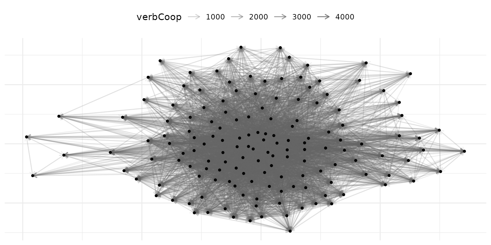

Pipeline: netify to lame and dbn
Cassy Dorff and Shahryar Minhas
2026-05-27
Source:vignettes/pipeline_lame_dbn.Rmd
pipeline_lame_dbn.RmdLatent space models for network data require carefully structured
array inputs whose construction is both tedious and error-prone when
performed manually. The amen package handles
cross-sectional and single-layer longitudinal networks,
lame extends this to longitudinal networks with
time-varying actor compositions, and dbn fits Dynamic
Bilinear Network models to multilayer longitudinal networks. Each
package expects a distinct data structure (3D arrays, lists of matrices,
or 4D arrays, respectively), and netify provides a unified
pipeline for producing all of them. Users describe their data once with
netify(), optionally combine layers with
layer_netify(), and then call to_amen() or
to_dbn() to obtain the exact structure each modeling
package requires.
Setup
The examples below use ICEWS event data, which captures directed interactions between 152 countries from 2002 to 2014 across four relation types: verbal cooperation, material cooperation, verbal conflict, and material conflict.
library(netify)
library(ggplot2)
# load the ICEWS event data
data(icews)
# preview
head(icews[, c("i", "j", "year", "verbCoop", "matlCoop", "verbConf", "matlConf")], 4)
#> i j year verbCoop matlCoop verbConf matlConf
#> 2 Afghanistan Albania 2002 6 1 0 0
#> 3 Afghanistan Albania 2003 1 1 0 0
#> 4 Afghanistan Albania 2004 10 2 0 1
#> 5 Afghanistan Albania 2005 0 0 0 0Part 1: Single-Layer Pipeline (netify to amen)
Step 1: Create the network
The first step is always netify(). We create a single
directed, weighted network representing verbal cooperation over
time.
verbal_net = netify(
icews,
actor1 = "i", actor2 = "j", time = "year",
symmetric = FALSE,
weight = "verbCoop",
missing_to_zero = FALSE,
nodal_vars = c("i_polity2", "i_log_gdp"),
dyad_vars = c("matlCoop", "verbConf"),
dyad_vars_symmetric = c(FALSE, FALSE),
output_format = "longit_array"
)
verbal_netKey choices:
-
missing_to_zero = FALSE: Preserving NAs distinguishes “no observed interaction” from “structurally impossible interaction.” This matters for latent space models where missing data and structural zeros have different likelihoods. -
output_format = "longit_array": We use array format because our actor set is constant across time. -
nodal_varsanddyad_vars: These covariates will be carried through to the amen output automatically.
Step 2: Inspect the network
Before modeling, it’s worth checking basic properties.
# quick summary
net_summary = summary(verbal_net)
head(net_summary[, c("net", "num_actors", "density", "num_edges", "reciprocity")])
#> net num_actors density num_edges reciprocity
#> 1 2002 152 0.3787034 8692 0.9778217
#> 2 2003 152 0.3871994 8887 0.9632488
#> 3 2004 152 0.4145173 9514 0.9769563
#> 4 2005 152 0.4071976 9346 0.9804325
#> 5 2006 152 0.4108139 9429 0.9771928
#> 6 2007 152 0.4243203 9739 0.9783703
# visualize a single year
verbal_2010 = subset(verbal_net, time = "2010")
plot(verbal_2010, add_text = FALSE)
Step 3: Convert to amen format
to_amen() converts a single-layer netify object into the
list structure that amen::ame() expects.
amen_data = to_amen(verbal_net)
# inspect the resulting array shapes
data.frame(
object = c("Y", "Xdyad", "Xrow", "Xcol"),
dims = c(
paste(dim(amen_data$Y), collapse = " x "),
paste(dim(amen_data$Xdyad), collapse = " x "),
paste(dim(amen_data$Xrow), collapse = " x "),
paste(dim(amen_data$Xcol), collapse = " x ")
)
)
#> object dims
#> 1 Y 152 x 152 x 13
#> 2 Xdyad 152 x 152 x 2 x 13
#> 3 Xrow 152 x 2 x 13
#> 4 Xcol 152 x 2 x 13The output is:
-
Y:
[n_actors x n_actors x n_time], the adjacency array -
Xdyad:
[n_actors x n_actors x n_dyad_vars x n_time], dyadic covariates -
Xrow:
[n_actors x n_nodal_vars x n_time], sender covariates -
Xcol:
[n_actors x n_nodal_vars x n_time], receiver covariates
These can be plugged directly into amen::ame():
library(amen)
# cross-sectional model for a single year
ame_fit = ame(
Y = amen_data$Y[, , "2010"],
Xdyad = amen_data$Xdyad[, , , "2010"],
Xrow = amen_data$Xrow[, , "2010"],
Xcol = amen_data$Xcol[, , "2010"],
R = 2,
symmetric = FALSE,
family = "nrm",
nscan = 1000, burn = 500, odens = 1,
plot = FALSE, print = FALSE
)Part 2: Longitudinal Pipeline with lame
For longitudinal modeling with time-varying actor compositions, use
to_lame(). This is a thin specialization of
to_amen() that (a) auto-pads ragged per-period matrices
into a 3D array via lame::list_to_array(), (b) emits a
ready-to-run lame::lame() snippet, and (c) provides
from_lame_fit() for round-tripping posterior predictions
back into a netify for plotting.
When to use lame format
Use to_lame() when:
- Actors enter and exit the network over time (e.g., new states forming, organizations dissolving)
- You want to leverage lame’s longitudinal latent space models
Create a network with varying actors
# use longit_list format for varying actor compositions
verbal_list = netify(
icews,
actor1 = "i", actor2 = "j", time = "year",
symmetric = FALSE,
weight = "verbCoop",
missing_to_zero = FALSE,
actor_time_uniform = FALSE,
nodal_vars = c("i_polity2", "i_log_gdp"),
dyad_vars = c("matlCoop"),
dyad_vars_symmetric = c(FALSE)
)
verbal_listConvert to lame format
nl = to_lame(verbal_list, lame = TRUE)
# inspect the shape of the returned per-period matrices
data.frame(
description = c("number of periods", "first period dims", "last period dims"),
value = c(
length(nl$Y),
paste(dim(nl$Y[[1]]), collapse = " x "),
paste(dim(nl$Y[[length(nl$Y)]]), collapse = " x ")
)
)
#> description value
#> 1 number of periods 13
#> 2 first period dims 152 x 152
#> 3 last period dims 152 x 152
# check actor counts across time
actor_counts = sapply(nl$Y, nrow)
actor_counts
#> 2002 2003 2004 2005 2006 2007 2008 2009 2010 2011 2012 2013 2014
#> 152 152 152 152 152 152 152 152 152 152 152 152 152Each element of the list can have a different set of actors.
to_lame() also bundles a copy-paste-ready snippet that pads
the ragged list into a 3D array with lame::list_to_array()
and then fits lame::lame():
cat(nl$ame_call)
#> U <- unique(unlist(lapply(nl$Y, rownames)))
#> padded <- lame::list_to_array(actors = U, Y = nl$Y, Xdyad = nl$Xdyad, Xrow = nl$Xrow, Xcol = nl$Xcol)
#> lame::lame(Y = padded$Y, Xdyad = padded$Xdyad, Xrow = padded$Xrow, Xcol = padded$Xcol, family = "normal", method = "mcmc", nscan = 1000, burn = 500)Run that snippet to fit the model. Conceptually:
library(lame)
U <- unique(unlist(lapply(nl$Y, rownames)))
padded <- lame::list_to_array(actors = U, Y = nl$Y, Xdyad = nl$Xdyad,
Xrow = nl$Xrow, Xcol = nl$Xcol)
lame_fit = lame::lame(
Y = padded$Y, Xdyad = padded$Xdyad,
Xrow = padded$Xrow, Xcol = padded$Xcol,
R = 2, family = "normal",
method = "mcmc", nscan = 1000, burn = 500
)Round-tripping fitted values back to netify
Once a fit is in hand, from_lame_fit() pulls the
posterior-mean linear predictor (or a residual / probability / per-cell
quantile) back into a cross-sectional netify so it can be plotted or
compared against the observed network:
# posterior-mean linear predictor
pred_net = from_lame_fit(lame_fit, value = "fitted")
plot(pred_net, style = "heatmap")
# 90% per-cell credible interval bounds on the probability scale
# (only for binary families; here for illustration)
lo = from_lame_fit(lame_fit, value = "prob_lower", alpha = 0.05)
hi = from_lame_fit(lame_fit, value = "prob_upper", alpha = 0.05)from_lame_fit() auto-detects the link function: probit
for lame::ame_als() / amen::ame() fits, logit
for lame::lame() Gibbs fits, with an explicit
link slot taking precedence.
Part 3: Multilayer Pipeline (netify to dbn)
The dbn package models multilayer longitudinal networks
using Dynamic Bilinear Network models. It expects a 4D array with
dimensions [n, n, p, T] where p is the number
of relation types (layers).
Step 1: Create individual layer networks
# verbal cooperation layer (symmetric - mutual diplomatic engagement)
verbal_coop = netify(
icews,
actor1 = "i", actor2 = "j", time = "year",
symmetric = TRUE,
weight = "verbCoop",
missing_to_zero = FALSE,
output_format = "longit_array",
nodal_vars = c("i_polity2", "i_log_gdp"),
dyad_vars = c("verbConf"),
dyad_vars_symmetric = c(TRUE)
)
# material cooperation layer (directed - trade/aid flows)
material_coop = netify(
icews,
actor1 = "i", actor2 = "j", time = "year",
symmetric = FALSE,
weight = "matlCoop",
missing_to_zero = FALSE,
output_format = "longit_array",
dyad_vars = c("matlConf"),
dyad_vars_symmetric = c(FALSE)
)Step 2: Combine into a multilayer network
layer_netify() supports mixed directedness, meaning
layers can have different symmetry settings. This is common in IR
applications where some relations are inherently symmetric (alliance
status) while others are directed (trade exports).
multi_net = layer_netify(
list(verbal_coop, material_coop),
layer_labels = c("Verbal", "Material")
)
multi_netNotice that the print output shows the mixed directedness across layers.
Step 3: Convert to dbn format
to_dbn() extracts the multilayer longitudinal netify
object into the exact 4D array format that dbn expects.
dbn_data = to_dbn(multi_net)
# what did we get?
cat("Y dimensions:", paste(dim(dbn_data$Y), collapse = " x "), "\n")
#> Y dimensions: 152 x 152 x 2 x 13
cat(" Actors:", dim(dbn_data$Y)[1], "\n")
#> Actors: 152
cat(" Layers:", paste(dimnames(dbn_data$Y)[[3]], collapse = ", "), "\n")
#> Layers: Verbal, Material
cat(" Time periods:", dim(dbn_data$Y)[4], "\n")
#> Time periods: 13The output structure:
-
Y:
[n_actors x n_actors x n_layers x n_time], the 4D adjacency array -
Xdyad:
[n_actors x n_actors x n_dyad_vars x n_time], dyadic covariates -
Xrow:
[n_actors x n_nodal_vars x n_time], sender covariates -
Xcol:
[n_actors x n_nodal_vars x n_time], receiver covariates
# fit a dynamic bilinear network model
library(dbn)
dbn_fit = dbn(
Y = dbn_data$Y,
R = 2,
nscan = 1000, burn = 500, odens = 1,
plot = FALSE, print = FALSE
)Single-layer networks work too
to_dbn() also handles single-layer longitudinal networks
by adding a layer dimension of size 1:
Part 4: Working with Mixed Directedness
A common challenge in political science is that data naturally includes both symmetric and directed relations. For example:
- Symmetric: UNGA voting agreement, alliance status, shared IGO membership
- Directed: trade exports, foreign aid, arms transfers
netify now handles this directly.
Creating mixed-directedness multilayer networks
# symmetric layer: average verbal cooperation
verbal_symm = netify(
icews,
actor1 = "i", actor2 = "j", time = "year",
symmetric = TRUE,
weight = "verbCoop",
missing_to_zero = FALSE,
output_format = "longit_array"
)
# directed layer: material cooperation
material_dir = netify(
icews,
actor1 = "i", actor2 = "j", time = "year",
symmetric = FALSE,
weight = "matlCoop",
missing_to_zero = FALSE,
output_format = "longit_array"
)
# combine -- mixed directedness is allowed
mixed_net = layer_netify(
list(verbal_symm, material_dir),
layer_labels = c("Verbal_Symm", "Material_Dir")
)
# check attributes
cat("Symmetric attribute:", attr(mixed_net, "symmetric"), "\n")
#> Symmetric attribute: TRUE FALSE
cat("Layer names:", attr(mixed_net, "layers"), "\n")
#> Layer names: Verbal_Symm Material_DirWhen you subset to a single layer, the correct symmetry is preserved:
# subset to the symmetric layer
verbal_only = subset(mixed_net, layers = "Verbal_Symm")
cat("Verbal layer symmetric:", attr(verbal_only, "symmetric"), "\n")
#> Verbal layer symmetric: TRUE
# subset to the directed layer
material_only = subset(mixed_net, layers = "Material_Dir")
cat("Material layer symmetric:", attr(material_only, "symmetric"), "\n")
#> Material layer symmetric: FALSEConverting mixed-directedness to dbn
to_dbn() handles mixed-directedness multilayer
objects:
dbn_mixed = to_dbn(mixed_net)
cat("Y dimensions:", paste(dim(dbn_mixed$Y), collapse = " x "), "\n")
#> Y dimensions: 152 x 152 x 2 x 13Note that the 4D array represents all layers uniformly. The per-layer symmetry information is metadata that you would pass to your model separately. For dbn, you would typically specify this in the model call.
Part 5: The missing_to_zero Decision
The missing_to_zero parameter deserves special attention
for modeling pipelines. By default, netify() sets
missing_to_zero = TRUE, which fills unobserved dyads with
zeros. This is fine for descriptive analysis but can be problematic for
statistical models.
Why it matters
# compare the two approaches
net_zeros = netify(
icews[icews$year == 2010, ],
actor1 = "i", actor2 = "j",
symmetric = FALSE,
weight = "verbCoop",
missing_to_zero = TRUE
)
net_na = netify(
icews[icews$year == 2010, ],
actor1 = "i", actor2 = "j",
symmetric = FALSE,
weight = "verbCoop",
missing_to_zero = FALSE
)
# count zeros vs NAs
raw_zeros = get_raw(net_zeros)
raw_na = get_raw(net_na)
cat("With missing_to_zero = TRUE:\n")
#> With missing_to_zero = TRUE:
cat(" Zeros:", sum(raw_zeros == 0, na.rm = TRUE), "\n")
#> Zeros: 12976
cat(" NAs:", sum(is.na(raw_zeros)), "\n")
#> NAs: 152
cat("\nWith missing_to_zero = FALSE:\n")
#>
#> With missing_to_zero = FALSE:
cat(" Zeros:", sum(raw_na == 0, na.rm = TRUE), "\n")
#> Zeros: 12976
cat(" NAs:", sum(is.na(raw_na)), "\n")
#> NAs: 152For latent space models, the distinction matters:
- Zero: “We observed this dyad and there was no interaction,” which informs the model that these actors are distant in latent space
- NA: “We don’t know whether these actors interacted,” so the model marginalizes over possible values
Recommendation for modeling pipelines: Always use
missing_to_zero = FALSE unless you are confident that all
unobserved dyads represent genuine zeros.
Quick Reference: Choosing Your Export Function
| Scenario | Function | Output |
|---|---|---|
| Single-layer, cross-sectional | to_amen() |
list(Y, Xdyad, Xrow, Xcol) |
| Single-layer, longitudinal (constant actors) | to_amen() |
3D arrays |
| Single-layer, longitudinal (varying actors) | to_lame(lame=TRUE) |
padded 3D arrays + ame_call snippet |
| Round-trip AME/LAME fit back to netify | from_lame_fit() |
netify (fitted / residual / prob / quantiles) |
| Multilayer, longitudinal | to_dbn() |
4D array [n, n, p, T]
|
| Single-layer, longitudinal (dbn format) | to_dbn() |
4D array [n, n, 1, T]
|
tl;dr
The netify pipeline eliminates manual array construction
by providing a four-step workflow: create the network with
netify() (using missing_to_zero = FALSE for
modeling applications), combine layers with layer_netify()
when multilayer structure is needed, export with to_amen()
/ to_lame() / to_dbn() depending on the target
modeling package, and pass the resulting output (or the bundled
ame_call snippet) directly to the model fitting function.
After fitting, from_lame_fit() round-trips posterior
predictions back into a netify so they can be plotted alongside the
observed network.